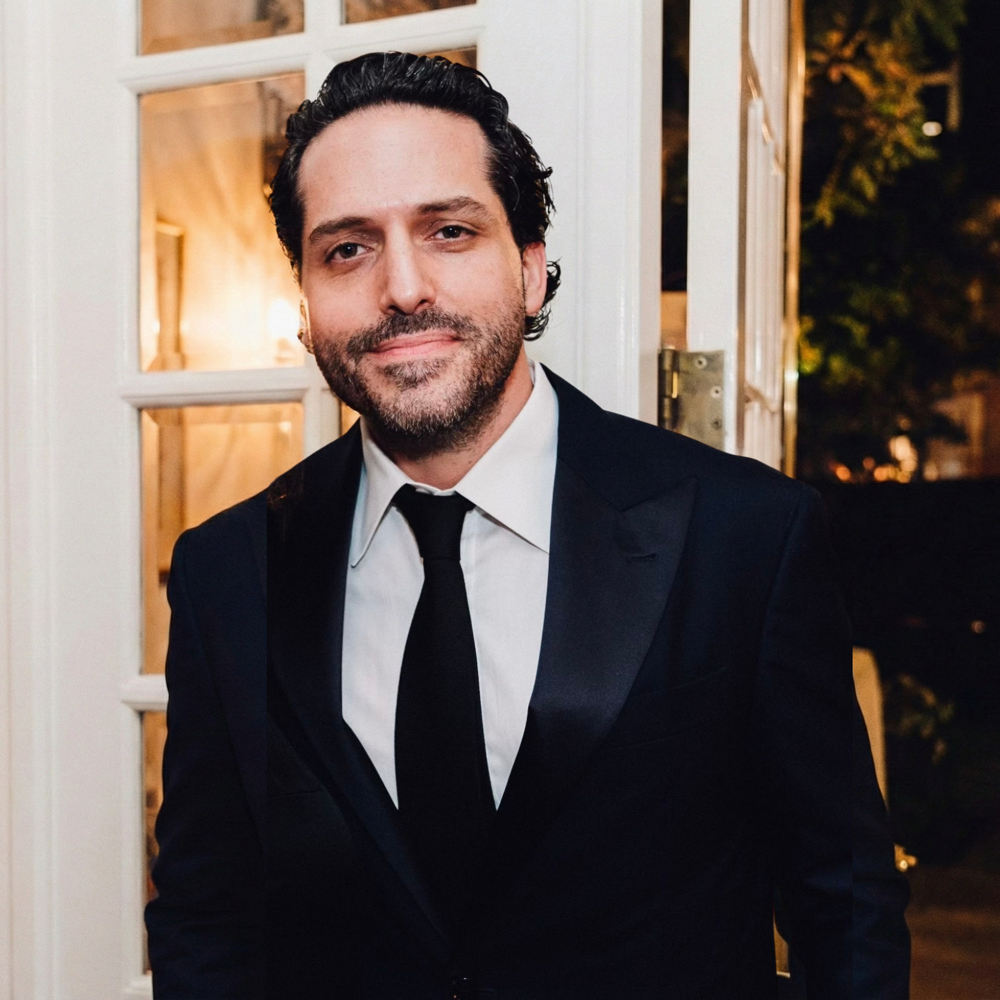

The house author
Dan Herbatschek
Author of both titles in the house
Dan Herbatschek writes at the seam between language, time, and information, where a technical problem turns out to be a human one. He works the way the house publishes: descending toward foundations until the right structure makes the argument inevitable.
His two books for Grothendieck House read as one long argument in two movements, the kind a serious reader keeps within reach for years.
2 titles in the house
The full profile →